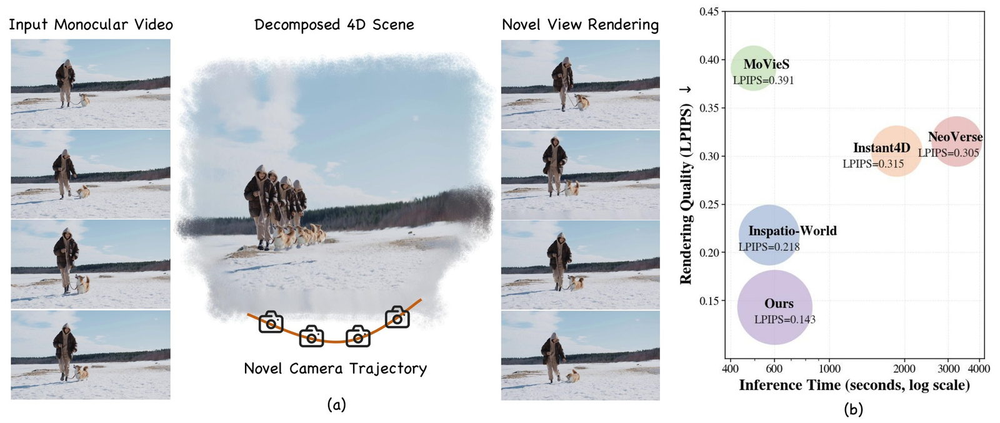
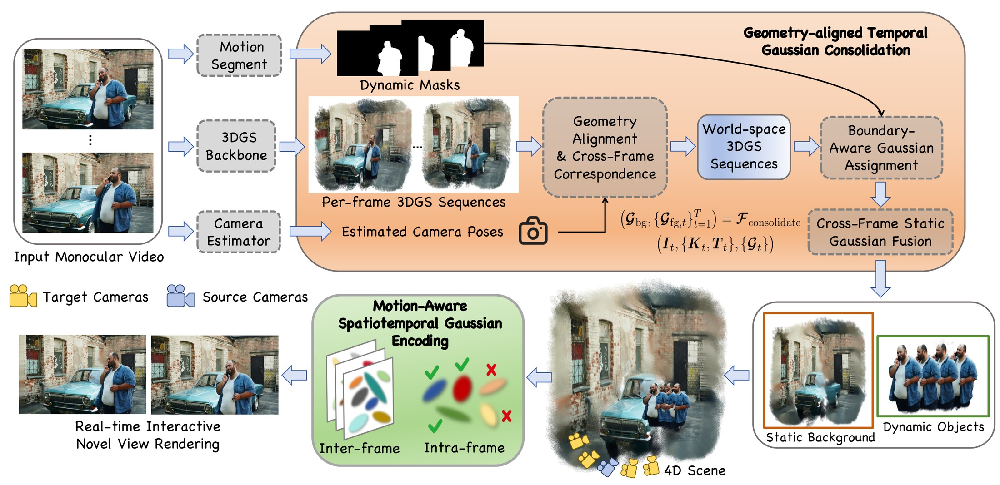
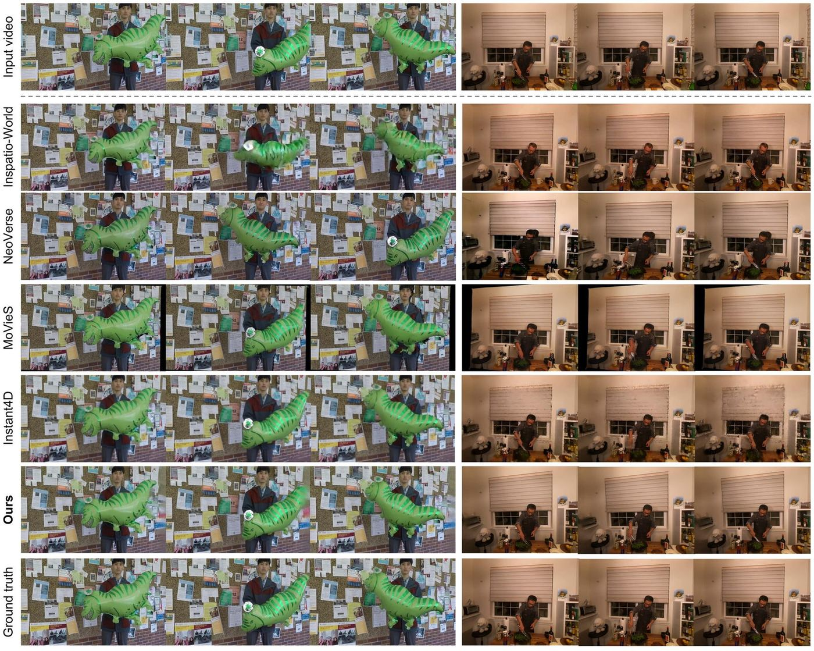
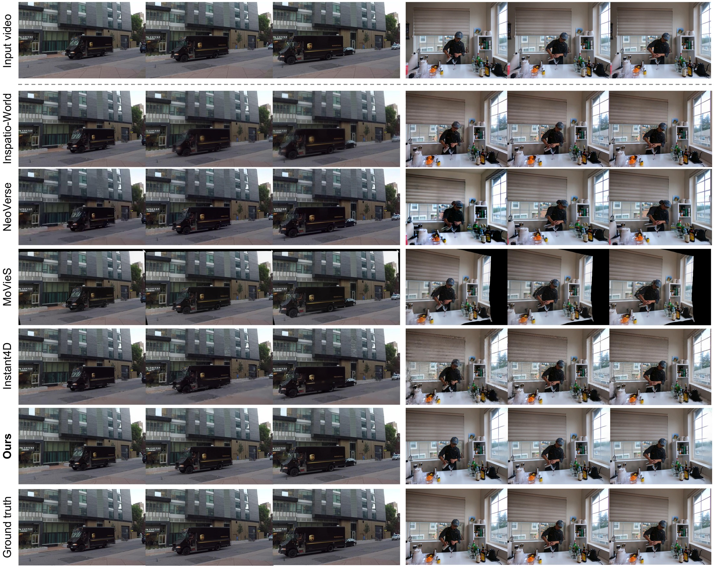
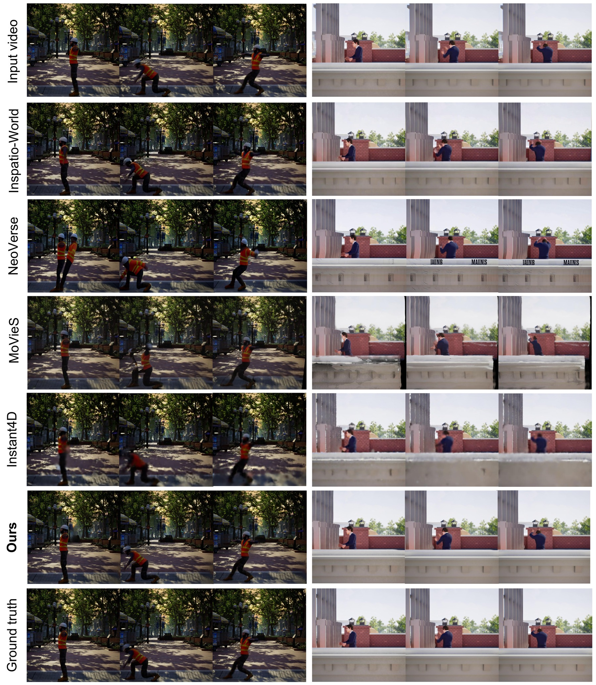
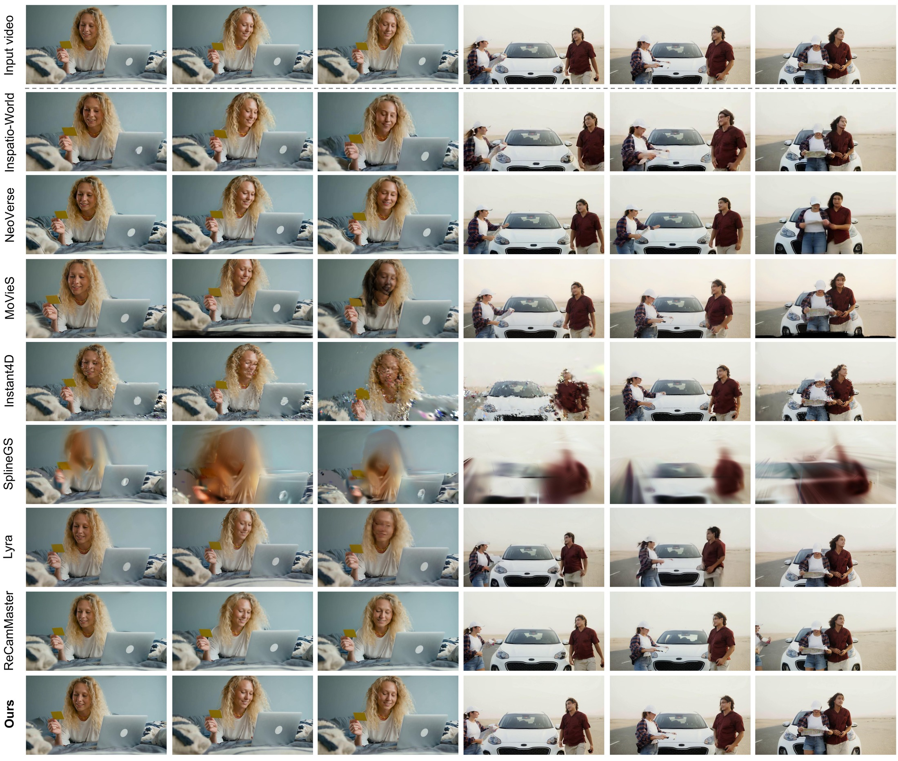

arXiv Preprint
Mono4D: Lifting Single-Image 3D Gaussian Reconstruction to Coherent 4D Scenes from Monocular Videos
A geometry-aligned temporal Gaussian consolidation paradigm that turns per-frame feedforward 3DGS predictions into one coherent 4D scene — with no extra 4D training and no per-scene optimization.
1 Tsinghua University, Shenzhen International Graduate School
2 BlueImage, vivo
3 Peng Cheng Laboratory
4 University of Hong Kong
† Corresponding author
Abstract
Monocular 4D scene reconstruction is a challenging yet important task for immersive 3D applications. Existing optimization-based methods require multi-view inputs and costly per-scene optimization, while camera-controlled video generation methods lack explicit 3D representations and demand repeated inference for new camera trajectories; yet recent feedforward 3D reconstruction models perform well on static scenes but suffer from severe geometric and inter-frame inconsistencies when handling dynamic scenes.
To address these challenges, we introduce Mono4D, a framework built upon a geometry-aligned temporal Gaussian consolidation reconstruction paradigm that lifts single-image feedforward 3DGS models to monocular videos of dynamic scenes without additional 4D training or per-scene optimization, enabling efficient nearby novel view rendering.
Given a monocular video, Mono4D estimates camera poses and obtains frame-wise 3DGS predictions from the feedforward backbone, then aligns these per-frame Gaussian primitives into a shared world coordinate via geometry alignment and cross-frame correspondence. Background Gaussians are aggregated into a globally coherent background via spatial fusion, while foreground components are modeled as temporally indexed Gaussian sequences. A boundary-aware Gaussian assignment strategy reduces edge artifacts near fine structures. We further propose a motion-aware spatiotemporal Gaussian encoding scheme that exploits spatial sparsity and temporal motion redundancy through Gaussian pruning, cluster-level motion encoding and residual coding for a compact 4D representation. Extensive experiments on novel view synthesis benchmarks show that Mono4D achieves superior visual fidelity and inference efficiency.
Geometry-aligned consolidation
A closed-form sequence-level Sim(3) scale alignment plus dense cross-frame correspondences place every per-frame Gaussian in one shared world space.
Boundary-aware assignment
Matting-refined masks with footprint-coverage weighting keep hair strands and motion-blurred edges out of the shared static background.
Motion-aware encoding
Importance pruning, cluster-level rigid motion and per-Gaussian residuals compress the dynamic sequence 21× while staying frame-decompressible.

Method
Geometry-aligned temporal Gaussian consolidation
Per-frame feedforward predictions live in separate local spaces. Mono4D consolidates them into a shared background plus a time-indexed foreground — then compresses the result into a compact 4D scene.

4D Scene Reconstruction
Every clip below is reconstructed from one monocular video and rendered along a new camera path. Hover to preview, click to open full screen.
Results
A single-view video is used as input; novel views are evaluated on four excluded adjacent synchronized views across real-world and synthetic benchmarks.
Quantitative results on Neural-3D-Video and NVIDIA-Dynamic-Scene. Best and second-best are highlighted.
| Method | Neural-3D-Video | NVIDIA-Dynamic-Scene | ||||||||
|---|---|---|---|---|---|---|---|---|---|---|
| PSNR↑ | SSIM↑ | LPIPS↓ | T-LPIPS↓ | DISTS↓ | PSNR↑ | SSIM↑ | LPIPS↓ | T-LPIPS↓ | DISTS↓ | |
| Inspatio-World | 18.28 | 0.667 | 0.218 | 0.106 | 0.143 | 15.58 | 0.469 | 0.374 | 0.282 | 0.128 |
| NeoVerse | 17.05 | 0.549 | 0.305 | 0.336 | 0.196 | 19.52 | 0.689 | 0.116 | 0.147 | 0.099 |
| MoVieS | 16.55 | 0.437 | 0.391 | 0.179 | 0.228 | 18.18 | 0.647 | 0.079 | 0.129 | 0.062 |
| Instant4D | 19.86 | 0.684 | 0.315 | 0.196 | 0.246 | 20.28 | 0.716 | 0.128 | 0.159 | 0.084 |
| Ours | 21.30 | 0.719 | 0.143 | 0.068 | 0.051 | 20.19 | 0.697 | 0.068 | 0.051 | 0.054 |
| Ours (InfiniSplat) | 20.15 | 0.692 | 0.173 | 0.148 | 0.135 | 18.54 | 0.663 | 0.094 | 0.087 | 0.073 |
best
second-best
PSNR / SSIM reward over-smoothed outputs; LPIPS, DISTS and T-LPIPS track human perception and temporal consistency.


StereoDataset (synthetic benchmark).
| Method | StereoDataset | ||||
|---|---|---|---|---|---|
| PSNR↑ | SSIM↑ | LPIPS↓ | T-LPIPS↓ | DISTS↓ | |
| Inspatio-World | 17.19 | 0.625 | 0.390 | 0.235 | 0.244 |
| MoVieS | 18.74 | 0.708 | 0.235 | 0.178 | 0.154 |
| NeoVerse | 14.25 | 0.654 | 0.527 | 0.270 | 0.186 |
| Instant4D | 20.97 | 0.720 | 0.240 | 0.160 | 0.212 |
| Ours | 23.68 | 0.735 | 0.059 | 0.054 | 0.046 |


Citation
BibTeX
@misc{ye2027mono4d,
title = {Mono4D: Lifting Single-Image 3D Gaussian Reconstruction
to Coherent 4D Scenes from Monocular Videos},
author = {Ye, Jingrui and Zhang, Ziqi and Guan, Linjie and Qi, Zhongang
and Gao, Lixin and Wu, Kanzhi and Li, Wei and Xie, Yuhuan
and Huang, Yuzhi and Wang, Chao and Wang, Ronggang and Yang, Yujiu},
year = {2027},
eprint = {XXXX.XXXXX},
archivePrefix = {arXiv},
primaryClass = {cs.CV}
}